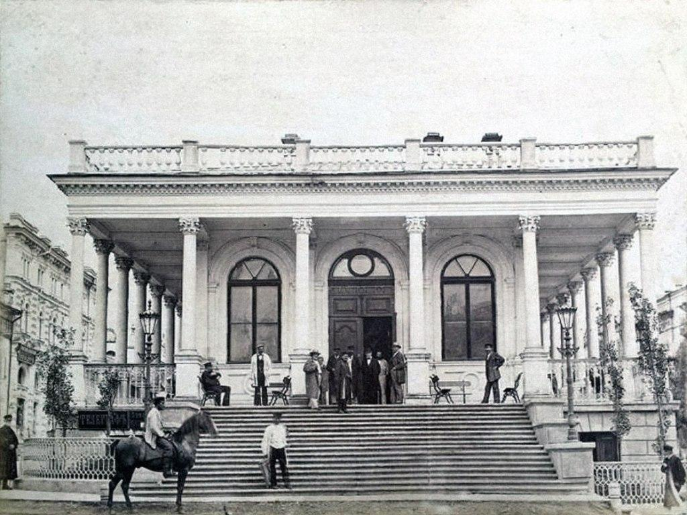
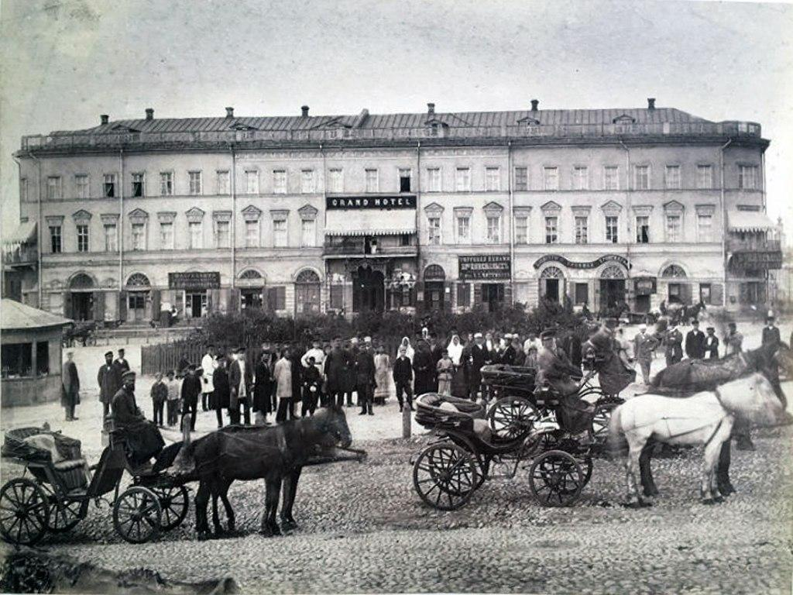
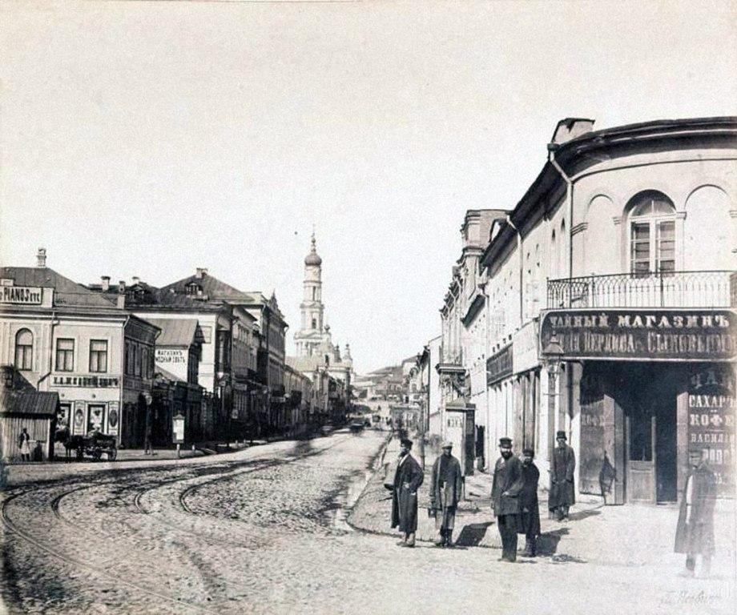

Місто Харків – адміністративний центр історико-географічної області України, за якою закріпилася назва «Слобожанщина». Площа сучасного Харкова перевищує 300 кв. км, а населення становить понад 1,5 млн. чоловік. Територія міста являє собою горбисту рівнину з долинами, ярами та ін. Клімат – помірно-континентальний.
Територія сучасного Харкова почала обживатися людьми в давнину. Розкопки археологів свідчать, що тут проживали різні народи: скіфо-сарматські, черняхівські племена, половці. Відомо також, що в другій половині I тис. н. е. цю територію заселяло східнослов’янське плем’я сіверян. Слов’яни ще в VIII ст. заснували на місці майбутнього Харкова своє поселення, яке в Х ст. стало відоме як місто Донець. Донець був не тільки фортецею, але і центром ремесел (ковальського, ювелірного, гончарного та ін.), важливим пунктом транзитної торгівлі. Перша згадка про Донець в літописі відноситься до 1185 р. З цим містом пов’язаний також епізод з «Слово о полку Ігоровім» – найважливішого твору епохи Київської Русі. Місто Донець було зруйноване ордами хана Батия в середині XIII ст.
Існує кілька версій щодо виникнення назви «Харків».
Деякі історики вважають, що Харків – трансформована назва від міста Шарукань – половецької столиці, яка перебувала на цих землях, інші пов’язують назву з ім’ям ватажка перших українських переселенців в середині XVII ст. Харька (Харитона).
Більшість же фахівців вважають, що свою назву місто отримало від річки Харків.
Засновниками міста були українські козаки і селяни, які втекли від національно-релігійного та соціального гніту польських панів з Наддніпрянської та Західної України, особливо в період визвольної боротьби українського народу під проводом Б. Хмельницького.
Українські переселенці почали обживати незаселені території, які ще на початку XVI ст. номінально входили до складу Московської держави. Цей край іменувався «Диким полем», так як був спустошений після монголо-татарських набігів.
Першу Харківську фортецю побудували «по черкаському» (тобто українському) звичаю. У 1656 р. московський цар Олексій Михайлович видав указ про створення окремого Харківського воєводства. Фортеця, яка виникла на місці, де зливалися річки Лопань і Харків, мала 10 веж і довжину стін більше одного кілометра.
Харків став центром Харківського козацького полку. Українські переселенці принесли з собою характерний для них козачий військовий і адміністративний порядок. З перших років існування фортеці біля неї почав селитися торгово-ремісничий люд.
З’явилися перші слободи – Гончарівка, Журавлівка і т. д. Це свідчило про перетворення Харкова з важливого прикордонного форпосту в центр ремесел і торгівлі.
До початку XVIII в. був заселений Поділ – район між фортецею і річкою Харків, а в 30-40-і рр., коли минула загроза нападу з боку кримських і ногайських татар, забудова переступила річки Лопань і Харків. У місті налічується близько 1 тис. дворів і ряд різного роду громадських споруд. З шести найбільших ярмарків Слобожанщини чотири проходили в Харкові: Успенський, Водохресний, Троїцький, Покровський.
Протягом довгого часу Харків відноситься до Бєлгородської єпархії. У 1799 р. була створена Слобідсько-Українська єпархія з центром в м Харкові. Серед перших церков, побудованих в місті, – Успенська церква. Її зведення почалося у 1658 р. Сучасний же храм був побудований в 70-і рр. XVIII ст. У 1726 році на території Харківської фортеці був заснований Покровський монастир. Монастирський храм є найстарішим в Харкові.
Харків стає губернським містом. Створюється міська дума (1785 р.). З 1734 р. починає діяти поштова служба, з 1739 року з’являється перший лікар, з 1778 року – перша аптека. Це трохи змінює побут харків’ян, проте протягом всього століття основним заняттям їх залишається землеробство (до 70% населення). Про розвиток ремесел і торгівлі свідчать найменування виниклих в той час вулиць і провулків: Чоботарська, Римарська, Капелюшний, Столярний, Слюсарний.
Уже в XVIII в. Харків стає освітнім центром.
Харківський колегіум (1731 р. таку назву отримала слов’яно-латинська школа, переведена в 1726 р. з Бєлгорода) став другим за значенням в Україні після Києво-Могилянської академії. Тут викладався повний курс наук. Бібліотека колегіуму стала першою в місті і до 40-их рр. XIX ст. налічувала вже 5 тис. томів.
На початку XIX ст. Харків вже розвивається не тільки як торговий, але і як промисловий центр. До 1897 року в місті налічується понад 70 підприємств: млинів, салотопок, винокурень і шкіряних заводів. До середини XIX в. міська промисловість переважно мала кустарний характер і основним напрямком економіки залишалася торгівля і переробка сільськогосподарської продукції. З другої половини XIX в. У зв’язку з ліквідацією кріпосного права і швидким розвитком Донецько-Криворізького регіону, місто перетворюється в один з найбільших економічних центрів Російської імперії. В середині століття в Харкові налічувалося вже понад 30 тисяч жителів. Фактором, який безпосередньо вплинув на розвиток міста, став розвиток залізничного транспорту. У 1869 р. відкрилася залізнична магістраль, яка пов’язала місто з Москвою, а потім – з Донбасом, Києвом, портами Чорного і Азовського морів. У місті розвивається вагоноремонтна справа, в 1897 р. дав першу продукцію Харківський паровозобудівний завод. Поступово підприємства міста почали випускати різноманітну продукцію – від сільськогосподарських машин до двигунів. Таким чином, Харків став постачальником сільськогосподарської техніки на загальноімперський ринок.
У 1828 р. почалося замощення міста каменем. У 1871 р. на вулицях Харкова з’явилося газове освітлення, в 1881 році була введена в експлуатацію перша черга міського водопроводу. У 1882 р. була прокладена перша лінія міської кінної залізниці, що проіснувала до 1918 р. Наприкінці XIX в. в місті була побудована перша електростанція, що дала можливість розпочати електрифікацію міського транспорту. У 1905 р. на вулицях міста з’явився перший електричний трамвай. У 1888 р. Харків став другим телефонізованим містом України.
З ростом міста з’являлися і нові навчальні заклади. До початку ХХ в. в Харкові було чотири чоловічі, дві жіночі гімназії, два реальних училища, духовна семінарія, кілька приватних гімназій і пансіонів, Інститут шляхетних дівчат, Комерційне училище, п’ять вищих початкових училищ (всього на 1902 р.- 111 початкових шкіл).
Багато подій у культурному та науковому житті Харкова в XIX ст. відбувалися вперше не тільки в місті, а й у всій Україні. Перший провінційний музей був відкритий у Харкові в 1886 р.. Це був міський художньо-промисловий музей.
Величезне значення мало відкриття 17 січня 1805 р. одного з найстаріших в Росії і першого в Україні Харківського університету. Його засновником став В. Н. Каразін. Університет є науковим і культурним центром, він відомий своїми вченими, випускниками та викладачами: Н. Н. Бекетовим, В. Я. Данилевським, Н. Ф. Сумцовим, Д. І. Багалієм і багатьма іншими корифеями.
Головні сучасні райони міста
- Шевченківський
- Київський
- Слобідський
- Новобаварський
- Індустріальний
Всього є три лінії метро:
- Салтівська
- Олексіївська
- Холодногірська лінія:
- Холодна гора
- Південиий Вокзал
- Центральний ринок
- Історичний музей
- Проспект Гагаріна